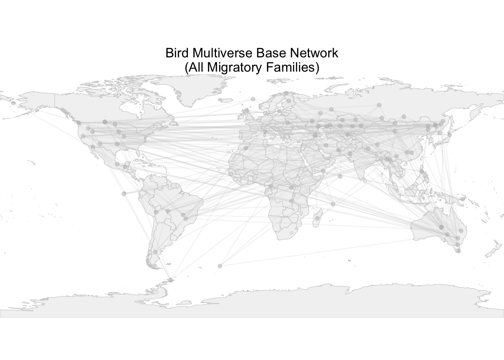

In the visualization, I build a “Bird Multiverse” of migratory species by plotting every bird at its geographic centroid on a global map and then highlighting each habitat in turn. A geographic K-nearest-neighbors network connects species by spatial proximity, while node aesthetics encode key life-history traits: point size represents range size, opacity corresponds to body mass, shape differentiates trophic levels, and fill color marks habitat. The most broadly distributed species in each habitat is labeled for easy reference.To ensure even representation and manage computational load, I sampled one species per family (83 families in total). The life-history data are drawn from the AVONET database.
Load Packages
library(tidyverse)
── Attaching core tidyverse packages ──────────────────────── tidyverse 2.0.0 ──
✔ dplyr 1.1.4 ✔ readr 2.1.5
✔ forcats 1.0.0 ✔ stringr 1.5.1
✔ ggplot2 3.5.1 ✔ tibble 3.2.1
✔ lubridate 1.9.3 ✔ tidyr 1.3.1
✔ purrr 1.0.2
── Conflicts ────────────────────────────────────────── tidyverse_conflicts() ──
✖ dplyr::filter() masks stats::filter()
✖ dplyr::lag() masks stats::lag()
ℹ Use the conflicted package (<http://conflicted.r-lib.org/>) to force all conflicts to become errors
library(FNN)library(scales)
Attaching package: 'scales'
The following object is masked from 'package:purrr':
discard
The following object is masked from 'package:readr':
col_factor
Linking to GEOS 3.11.0, GDAL 3.5.3, PROJ 9.1.0; sf_use_s2() is TRUE
Visulization Code
Data processing
# load bird avonet datasetd <-read.csv("https://raw.githubusercontent.com/difiore/ada-datasets/refs/heads/main/AVONETdataset1.csv")# trim datad <- d %>%select(-c("Traits.inferred", "Reference.species", "Mass.Refs.Other"))d <-na.omit(d)# select migratory birds onlyd1 <- d %>%filter(Migration ==3)# pick one species from each familyset.seed(42) df <- d1 %>%group_by(Family1) %>%sample_n(1) %>%ungroup()
Visualization preparation
# load word mapworld <-ne_countries(scale ="medium", returnclass ="sf")# clean and standardize data for visualizationdf_graph <- df %>%mutate(Species1 =str_trim(Species1)) %>%filter(!is.na(Species1), !is.na(Habitat),!is.na(Mass), !is.na(Range.Size),!is.na(Centroid.Longitude), !is.na(Centroid.Latitude),!is.na(Trophic.Level)) %>%mutate(name = Species1,Mass_alpha =rescale(Mass, to =c(0.3, 1)),Range_size =rescale(Range.Size, to =c(2, 8)) )# build global Geo KNN edge based on centroid lat/lon of habitat rangecoords_all <- df_graph %>%select(x = Centroid.Longitude, y = Centroid.Latitude) %>%as.matrix()knn_all <-get.knn(coords_all, k =3) # k = 3, connect to the closet three pointsedges_all <-tibble(from =rep(df_graph$name, each =3),to =as.vector(df_graph$name[knn_all$nn.index])) %>%filter(from != to) %>%distinct()edges_all2 <- edges_all %>%left_join(df_graph %>%select(name, x = Centroid.Longitude, y = Centroid.Latitude),by =c("from"="name")) %>%left_join(df_graph %>%select(name, xend = Centroid.Longitude, yend = Centroid.Latitude),by =c("to"="name"))# get coordsedges_all2 <- edges_all %>%left_join(df_graph %>%select(name, x = Centroid.Longitude, y = Centroid.Latitude),by =c("from"="name")) %>%left_join(df_graph %>%select(name, xend = Centroid.Longitude, yend = Centroid.Latitude),by =c("to"="name"))# define color and shape for different habitat and trophic levelhabitats <-unique(df_graph$Habitat)pal_base <-brewer.pal(min(length(habitats), 8), "Set2")if(length(habitats) >length(pal_base)) pal_base <-colorRampPalette(pal_base)(length(habitats))hab_pal <-setNames(pal_base, habitats)trophic_lvls <-unique(df_graph$Trophic.Level)fill_shapes <-c(21,22,23,24,25,0,1,2) shape_map <-setNames(fill_shapes[1:length(trophic_lvls)], trophic_lvls)
Visualization
p_base_map <-ggplot(data = world) +geom_sf(fill ="gray95", color ="gray80") +geom_segment(data = edges_all2,aes(x = x, y = y, xend = xend, yend = yend),color ="grey80", alpha =0.2) +geom_point(data = df_graph,aes(x = Centroid.Longitude, y = Centroid.Latitude),color ="grey70", size =1.5, alpha =0.4) +coord_sf(expand =FALSE) +theme_void() +ggtitle("Bird Multiverse Base Network\n(All Migratory Families)") +theme(plot.title =element_text(hjust =0.5))# print global mapprint(p_base_map)

# highlight overlay of each habitatplots_map <-map(habitats, function(hab) { sub <- df_graph %>%filter(Habitat == hab) n <-nrow(sub)ggplot(data = world) +# global mapgeom_sf(fill ="gray95", color ="gray80") +# base network (built from knn)geom_segment(data = edges_all2,aes(x = x, y = y, xend = xend, yend = yend),color ="grey80", alpha =0.1) +geom_point(data = df_graph,aes(x = Centroid.Longitude, y = Centroid.Latitude),color ="grey70", size =1, alpha =0.3) +# highlight current habitat nodegeom_point(data = sub,aes(x = Centroid.Longitude, y = Centroid.Latitude,size = Range_size,alpha = Mass_alpha,shape = Trophic.Level),fill = hab_pal[hab],color ="black",stroke =0.6) +# label the species with the maximum distribution rangegeom_text_repel(data = sub %>%slice_max(Range_size, n =1),aes(x = Centroid.Longitude, y = Centroid.Latitude, label = name),size =2) +coord_sf(expand =FALSE) +ggtitle(glue::glue("{hab} (n = {n})")) +theme_void() +theme(plot.title =element_text(hjust =0.5),legend.position ="bottom") +scale_size_continuous(range =c(2,8), guide =guide_legend("Range Size")) +scale_alpha_continuous(range =c(0.3,1),guide =guide_legend("Mass")) +scale_shape_manual(values = shape_map, guide =guide_legend("Trophic Level")) +guides(size =guide_legend("Range Size", nrow =2, byrow =TRUE),alpha =guide_legend("Mass", nrow =2, byrow =TRUE),shape =guide_legend("Trophic Level",nrow =2, byrow =TRUE) ) +theme(legend.position ="bottom",legend.box ="horizontal" )})names(plots_map) <- habitats# print map for each habitatfor(h in habitats) print(plots_map[[h]])